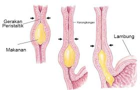

Kerongkongan

Kerongkongan bentuknya seperti pipa yang panjangnya pada orang dewasa kira-kira 25 cm. Pangkalnya adalah di leher, di belakang tenggorok, kemudian di daerah dada di belakang jantung, menembus sekat rongga badan di depan tulang belakang dan bermuara dalam lambung.
Kerongkongan berfungsi sebagai jalan bagi makanan yang telah dikunyah dari mulut menuju ke lambung. Pada kerongkongan tidak terjadi proses pencernaan. Bagian pangkal kerongkongan ( faring) berotot lurik dan bekerja secara sadar menurut kehendak kita. Makanan berada di dalam kerongkongan hanya sekitar enam detik. Otot kerongkongan dapat berkontraksi secara bergelombang sehingga mendorong makanan masuk ke dalam lambung. Gerakan kerongkongan ini disebut gerak peristaltik. Gerak ini terjadi karena otot yang memanjang dan melingkari dinding kerongkongan secara bergantian. Jadi gerak peristaltik merupakan gerakan kerongkongan untuk mendorong makanan masuk ke dalam lambung.